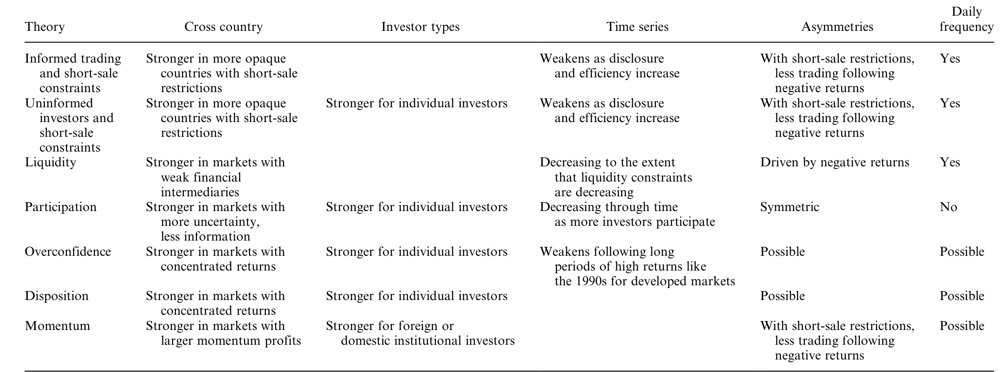
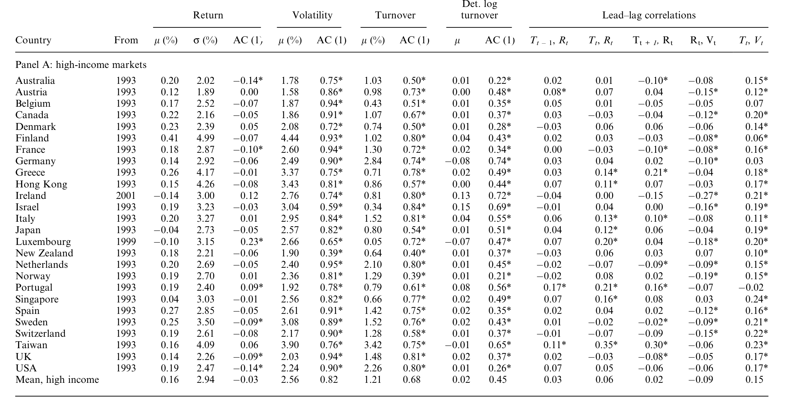
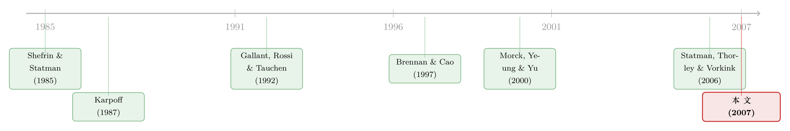

股票涨了，他们为什么更想交易？——46 国市场里的一条「追涨」暗线
本文读的是 Griffin, Nardari & Stulz (2007, Review of Financial Studies)：在 46 个国家的周度数据里，市场过去的收益越好，随后的换手率就越高——一个 1 个标准差的收益冲击，平均会在 10 周后把换手率推高 0.46 个标准差；而且这条「追涨」关系在发展中市场、禁止卖空的市场、腐败程度高的市场里都明显更强。
1 一个被问烂、却始终没答好的问题
先抛一个看似平淡的问题：当市场最近涨得不错，投资者会不会交易得更勤？
你可能觉得这还用问吗——涨了大家自然兴奋，成交量上去是常识。但金融学里有一件尴尬的事：成交量（trading volume）几乎是所有市场变量里我们「理论上」最说不清楚的一个。Gallant, Rossi & Tauchen (1992) 当年就抱怨过，价格—成交量关系的实证文献「非常依赖数据、却几乎没有严谨的均衡模型来指引」（p. 201）。本文三位作者干脆承认：直到他们写作的那一天，这句话依然成立。
更要命的是，过去的研究各说各话。Karpoff (1987) 的经典综述告诉我们，收益的绝对值和成交量正相关——无论涨跌，只要动得大，量就大，因为大幅波动意味着有大量信息到达。这一条早已板上钉钉。但本文关心的根本不是这个。它问的是一个带方向的问题：
投资者会不会在上涨之后交易得更多、在下跌之后交易得更少？
这是两回事。前者是「波动带来成交」，后者是「过去的收益符号带来成交」。把这两件事混在一起，是过去文献吵了几十年也没收敛的根源之一。Hiemstra & Jones (1994) 发现日度收益能 Granger 引起 NYSE 成交量；Statman, Thorley & Vorkink (2006) 用 1962–2001 的月度数据说「全市场成交量与过去的市场收益冲击正相关」。可 Chordia, Roll & Subrahmanyam (2001) 偏偏用 1988–1998 的美国日度数据发现，负的过去收益反而和美元成交量正相关，正收益却几乎没有作用。Tse (1991) 看日本、Saatcioglu & Starks (1998) 看六个拉美市场，结论是「收益根本带不动成交量」。
一地鸡毛。于是一个自然的问题是：会不会这条关系本身就是时变的、跨国不同的，所以谁抓住一段样本就得到一个结论？这正是本文的切入点——它不去争论某一个国家的某一段历史，而是把 46 个国家摆到同一张桌子上，问两件事：第一，这条「追涨」关系到底普不普遍？第二，它在哪些国家更强、哪些更弱，而这种横截面差异又能告诉我们投资者究竟为什么追涨？
2 理论：八种「追涨」的故事，指向同一组国家特征
本文有意思的地方在于，它不先动数据，而是先把文献里所有能解释「成交量正向跟随过去收益」的理论一字排开，逐个问：如果这个故事是真的，那么这条关系应该在什么样的国家里更强？
这一步是整篇文章的「枢纽」，因为后面所有的跨国回归，本质上都是在替这些理论做体检。我把作者梳理的逻辑压成一条线：
- 有信息的投资者 + 卖空成本。Diamond & Verrecchia (1987) 指出，当卖空被禁止或更昂贵时，坏消息进入价格的速度更慢——因为知情者拿到利空时不能（或不愿）做空，于是坏消息来时成交反而稀少。推论：在越不透明、卖空越贵的经济体里，这条关系越强。
- 无信息的趋势追随者。Brennan & Cao (1997) 建模了信息上处于劣势的外国投资者：他们拿到信息比本地人晚，于是只能把过去的价格当作信号，理性地变成趋势追随者。推论：市场效率越低、信息进价格越慢，这条关系越强。（关于外资作为「后知后觉者」这一点，可参见《外资来了，全球新闻就传得更快吗？》。）
- 流动性效应。Bernardo & Welch (2004) 里，股价下跌时做市商更怕未来的流动性冲击、变得更惜售，于是下跌后提供的流动性减少、成交萎缩。推论：金融中介越不发达的国家越明显。
- 参与成本。Allen & Gale (1994)、Orosel (1998)：股价涨了，原本观望的人上调了「入市划算」的估计，于是上涨后参与增加、成交上升。
- 过度自信。Daniel, Hirshleifer & Subrahmanyam (1998)、Gervais & Odean (2001)：赚过钱的人会更自信、交易更多。推论：在个股相关性高的国家更强（大家一起赚、一起膨胀自信），且对个人投资者更重要。
- 处置效应（disposition effect）。Shefrin & Statman (1985)：投资者急于在上涨后锁定盈利、却不愿在下跌后割肉，于是成交跟着收益走。推论：个人投资者越重要、个股相关性越高的国家越强。
- 动量交易。DeLong et al. (1990)、Hong & Stein (1999)：正反馈交易者涨了买、跌了卖；若不能卖空，他们就只能在涨市里卖手中的票，于是在上涨市场更活跃。
把这七八个故事并到一起，你会发现它们虽然机制各异，却惊人地指向同一组国家特征：卖空限制、市场不透明/低效率、个股高相关、个人（相对机构、外资）投资者占主导、金融中介不发达。这就是本文 Table 3 的作用——它把每个理论的可检验含义整理成一张对照表，让后面的横截面回归有的放矢。

Table 3: summarizes the empirical implications of the various theoretical
注意这里的巧妙：作者并不指望从数据里「证明」某一个理论对。理论之间高度重叠，单靠成交量数据无法把它们干净地分开。作者的策略是反过来用——先看数据里这条关系在哪些国家强，再回头看是哪几类国家特征在驱动，从而排除一部分理论、为另一部分理论加分。
3 识别：一个三变量 VAR，和它的脉冲响应
这篇论文没有一个可直接估计的结构化理论模型（作者自己反复强调文献里没有这样的模型）。它的「识别」靠的是一个把收益、波动率、换手率放在一起的向量自回归 (vector autoregression, VAR)，外加脉冲响应分析。
为什么非要 VAR？因为「收益→成交量」这条关系最大的混淆项，是波动率。波动率既和收益相关（跌的时候往往更波动），又和成交量相关（Karpoff 那条铁律）。如果不把波动率控制住，你看到的「涨后成交多」可能只是「波动大时成交多」的伪装。所以作者对每个国家估计一个三变量系统，把市场收益 \(R_t\)、市场波动率 \(V_t\)、换手率 \(T_t\) 放进同一个向量 \(y_t=(R_t,V_t,T_t)'\)：
$$ y_t = c + \sum_{i=1}^{p} A_i\, y_{t-i} + \varepsilon_t $$
这里 \(A_i\) 是 \(3\times 3\) 的系数矩阵，\(\varepsilon_t\) 是同期可能相关的残差向量。换手率（turnover，即成交金额除以市值）在进入系统前先做了去趋势处理（detrended log turnover），以免长期上升的成交趋势污染结果。
波动率本身怎么量？这是细节里见功夫的地方。作者并不只用一种度量，而是用了一整套：EGARCH 滤波（Nelson 1991）、平方残差、以及基于最高/最低价的区间度量（Garman & Klass 1980；Alizadeh, Brandt & Diebold 2002）。结论是稳健的——而且控制了波动率之后，收益→成交量的关系反而更强了，说明它不是波动率的影子。
有了 VAR，怎么读出「涨之后成交怎么变」？答案是脉冲响应（impulse response）：给收益一个一次性的正向冲击，追踪未来若干周里换手率的累积反应。因为系统里残差同期相关，作者用的是不依赖变量排序的广义脉冲响应（generalized impulse response，Pesaran & Shin 1998；Koop, Pesaran & Potter 1996），避免了 Cholesky 分解里「谁先谁后」的任意性。
到这里，方法的全部张力可以浓缩成一句话：把波动率这个最大的捣乱者关进同一个笼子，再看收益的纯方向冲击能把成交量推多远。
4 数据
- 来源：Datastream International。每个国家取周度（周三收盘到周三收盘）的市场收益、总成交金额、总市值，全部以本币计价。
- 样本：46 个国家，主样本为 1993 年 1 月 2 日至 2003 年 6 月 30 日，约 10.5 年周度数据。多数国家有至少 10 年周度观测。
- 分组：26 个高收入市场（Panel A）+ 20 个发展中市场（Panel B）。
- 关键变量：换手率 = 成交金额 / 市值；并构造去趋势对数换手率。
Table 1 的描述统计里已经埋着伏笔。看「Lead–lag correlations」那几列：发展中市场里，滞后换手率与当期收益（\(T_{t-1},R_t\)）的相关、以及当期换手率与收益的相关，普遍比高收入市场更显眼——比如土耳其、韩国、泰国、波兰这些市场，\(T_t,R_t\) 的相关动辄 0.3 上下，而很多高收入国家这一列几乎是噪声。这张表还没做任何回归，跨国差异的轮廓就已经浮出来了。

Table 1: presents summary statistics for weekly returns, EGARCH
5 主要结果：一条普遍、却分布极不均匀的「追涨」线
第一，这条关系是真的，而且经济意义不小。 在三变量 VAR 的脉冲响应里，一个正向收益冲击在 10 周后显著提高了 24 个国家的成交量，而显著降低成交量的国家是 0 个。量级上，1 个标准差的收益冲击平均推高换手率 0.46 个标准差——这不是统计显著但经济上可忽略的那种「噪声里的信号」，而是实打实的大效应。更关键的是，作者通过脉冲响应发现：前人盯着看的那个同期正相关（收益和成交量当周一起动），在经济重要性上被收益与过去成交量之间这条更强的滞后关系「矮化」了。换句话说，真正的故事在时间的「之后」，而不在「同时」。
第二，也是全文最漂亮的一击——这条关系在横截面上分布得极不均匀。 它在发展中市场里明显比高收入市场强；而且对高收入国家来说，它在近年还在减弱。最刺眼的对照是：在 1993–2003 这段样本里，美国和英国的收益—换手率关系接近于零、不显著；可同样是美英，在更早的 1983–1992 这十年里，这条关系却是正且显著的。同一个国家，换一段历史，符号和显著性就翻篇——这恰恰解释了为什么过去的文献会打成一团乱仗：大家其实在不同的「时空格子」里各看到了真相的一角。
第三，卖空限制是最干净的那条分界线。 在不允许卖空的国家里，收益冲击 5 周后让成交量显著为正的，有 16/21；而在允许卖空的国家里，只有 8/25。这个对比几乎是教科书级的：卖空被堵住时，坏消息无法通过做空表达，下跌后成交自然萎缩，于是「涨多跌少」的不对称就被放大。单变量回归进一步显示，这条关系在卖空被禁、腐败更高、机构投资者占比更低、股市越不发达的国家更强。
第四，效率与 \(R^2\) 的线索。 Morck, Yeung & Yu (2000) 提出，一个市场越无效率，个股就越「同涨同跌」，市场模型回归的平均 \(R^2\) 就越高。本文发现，平均 \(R^2\) 与收益—成交量关系的强度强正相关——越像「一锅端」的市场，追涨越凶。但作者很诚实地补了一刀：市场的波动率和它与世界市场的相关性，本身就解释了 \(R^2\) 的很大一部分，所以 \(R^2\) 在横截面回归里到底扮演什么角色，并不好干净地解读。
第五，谁在追涨？ 在 7 个能区分外国投资者交易的国家里，这条关系对外资更弱。外资多为机构，这与「关系对个人投资者更强」的判断一致，也和过度自信、处置效应这些个人投资者色彩浓的故事对得上。（顺带一提，「换手率」本身有多大一部分只是被动的再平衡、而非主动的追涨，是另一个值得追问的问题，可参见《翻看换手率》。）
把这五点串起来，本文真正钉死的核心是：收益—成交量关系不是一条放之四海而皆准的常数，而是一面镜子，照出的是一个市场的卖空制度、信息效率、投资者构成和透明度。 哪里制度越「粗糙」、信息越慢、个人越多，哪里的人就越爱追涨。
6 文献脉络
这条研究线的源头，是把「价格」和「成交量」放在一起看的传统。最早把成交量和收益绝对值的正相关确立为「程式化事实」的，是 Karpoff (1987) 的综述；Gallant, Rossi & Tauchen (1992) 用 1928–1987 的日度数据再次确认了大波动后放量，但他们坦言分不清正向大波动和负向大波动谁带来的放量更多——方向问题，自此悬而未决。
接着，理论这边各自生长出对「方向」的预测：Shefrin & Statman (1985) 的处置效应、Diamond & Verrecchia (1987) 的卖空约束与坏消息慢扩散、Brennan & Cao (1997) 的外资趋势追随、以及 Odean、Gervais 一脉的过度自信。它们都暗示成交量会正向跟随过去收益，但谁也没给出一个能直接拿去估计的全市场模型。
然后，实证这边在不同样本上得出了彼此冲突的结论——Chordia, Roll & Subrahmanyam (2001) 的美国日度、Statman, Thorley & Vorkink (2006) 的美国月度、Tse (1991) 的日本、Saatcioglu & Starks (1998) 的拉美——拼图始终对不上。Morck, Yeung & Yu (2000) 则从另一条路提供了「无效率市场更同步、\(R^2\) 更高」的诊断工具。

本文的位置，是把上面这两条线第一次系统地缝在一起：用 46 国的跨国横截面，既证明这条关系普遍存在，又用国家特征的差异去裁决那些彼此重叠的理论。它没有给出新模型，但它把「为什么文献吵不出结果」这件事本身解释清楚了——因为答案从来就不是一个数，而是一个分布。
7 评论与延伸（Q&A + 研究方向）
(a) 几个可能的疑问
Q：这跟「成交量与收益绝对值正相关」那条老结论，区别到底在哪？
区别在方向。老结论说的是「动得大就放量」，涨跌对称；本文说的是「涨之后放量、跌之后缩量」，是带符号的不对称关系。作者特意在 VAR 里控制了波动率（也就是控制了「动得大」这一项），结果关系反而更强，正是为了把这两件事切开。
Q：横截面只有 46 个国家，跨国回归的自由度够吗？会不会是少数几个市场在带节奏？
这是本文识别上最实在的软肋。46 个观测做多元横截面回归，统计功效有限，而且国家层面的制度变量彼此高度相关（卖空、腐败、效率、发展程度往往捆在一起），很难干净地分离出「哪一个」在起作用。作者也因此主要做单变量回归、并用「显著国家计数」这种稳健但粗糙的方式呈现，而非押注在某个精确系数上。
Q：VAR 里把收益、波动率、换手率放在一起，会不会反过来是成交量在推动收益？
有可能，而且文献里确有「成交量领先收益」的模型（如 Hoontrakul, Ryan & Perrakis 2002）。本文用广义脉冲响应追踪的是收益冲击之后换手率的反应，时间次序上把重点放在「收益在前」，但 VAR 终究是相关性框架，无法排除共同的、未观测的驱动因素（比如同时影响两者的情绪或资金流）同期作祟。
Q：为什么美英在 1993–2003 几乎看不到这条关系，更早却有？
这恰恰是作者想讲的核心——关系强度随市场效率上升而衰减。美英在 1980 年代尚不如后来高效、机构化程度也更低，那时个人投资者的处置效应/过度自信、以及信息的慢扩散更能留下痕迹；进入 1990 年代后，效率提高、卖空更顺畅，这条「追涨」线就被磨平了。
Q：\(R^2\) 那条证据到底算不算数？
半算。平均 \(R^2\) 与关系强度确实强正相关，方向上支持「越无效率越追涨」。但作者诚实地指出，\(R^2\) 的大部分又能被波动率和与世界市场的相关性解释掉，所以无法把「无效率」从「高波动」里干净地剥离——这是一处该保留怀疑的地方。
Q：对外资更弱，能直接说明「散户才是追涨主力」吗？
只能说一致、不能说证明。仅 7 个国家有外资交易数据，样本小；而且外资偏机构，「外资弱」既可能因为他们更理性，也可能因为他们的交易动机（跨境配置、汇率对冲）本就和本地散户不同。把它当作支持性证据、而非决定性证据更稳妥。
(b) 几个可能的研究问题与提案
1. 把这套逻辑搬到公司债市场。 【经济故事】公司债天然卖空困难、做市商库存约束强、个人参与少而机构主导——按本文逻辑，这里的「收益→成交」不对称应当由做市商流动性效应而非散户行为驱动，方向可能与股市相反（坏消息后被迫放量甩货）。这能把 Bernardo–Welch 式的流动性故事和行为故事干净地分开。 【可行性】中。数据可用 TRACE 的成交量 + 债券层面收益，识别上可借危机期（如 2008、2020）的外生流动性冲击做事件研究。难点在于债券成交稀疏、零成交多，需要专门的流动性度量。
2. 用卖空制度的「变更」做准自然实验。 【经济故事】本文是横截面对比「允许 vs 禁止卖空」，但制度差异与其他国家特征纠缠。若某国在某时点放开或收紧卖空，可以用双重差分 (difference-in-differences, DiD) 看收益—成交量不对称是否随之改变，直接检验 Diamond–Verrecchia 机制。 【可行性】高。Bris, Goetzmann & Zhu (2006) 已整理过各国卖空制度的时序，2008 金融危机期间多国临时禁空更是现成的冲击源。识别相对干净。
3. 把「外资 vs 本地」做成持有人层面的追涨度量。 【经济故事】本文只在 7 国、且只在「是否外资」这一粗粒度上比较。若能拿到投资者类型层面的逐笔或逐日净买入，可以直接量出不同类型持有人各自的追涨弹性，检验「散户处置效应 vs 外资趋势追随」谁更强。 【可行性】中。需要类似台湾、韩国那种按投资者类型披露的交易数据，覆盖国家有限，但在有数据的市场里识别非常直接。
4. 重估近二十年后的「衰减」。 【经济故事】本文样本止于 2003，且预言效率上升会磨平这条关系。2003 年后高频交易、被动投资、散户 App 化（疫情后的散户潮）同时发生——追涨到底是继续衰减，还是被新一代散户重新点燃？ 【可行性】高。Datastream/Refinitiv 的周度数据可直接延展样本，复制其 VAR；难点在于成交量结构（被动、做市）已大变，需重新界定「主动追涨」的成交。
5. 把 \(R^2\) 之外的「无效率」尺子换一把。 【经济故事】作者承认 \(R^2\) 难解读。若改用价格延迟（price delay，Hou & Moskowitz 2005）或信息效率的直接度量（Griffin, Kelly & Nardari 2006）作横截面解释变量，能更干净地检验「越无效率越追涨」。 【可行性】中。度量现成，但仍受制于 46 国的小横截面自由度问题。
参考文献
- Allen, F., and D. Gale (1994). Limited Market Participation and Volatility of Asset Prices. American Economic Review 84, 933–955.
- Bernardo, A., and I. Welch (2004). Liquidity and Financial Market Runs. Quarterly Journal of Economics 119, 135–158.
- Brennan, M. J., and H. H. Cao (1997). International Portfolio Investment Flows. Journal of Finance 52, 1851–1880.
- Chordia, T., R. Roll, and A. Subrahmanyam (2001). Market Liquidity and Trading Activity. Journal of Finance 56, 501–530.
- Daniel, K., D. Hirshleifer, and A. Subrahmanyam (1998). Investor Psychology and Security Market Under- and Overreactions. Journal of Finance 53, 1839–1885.
- Diamond, D. W., and R. E. Verrecchia (1987). Constraints on Short-Selling and Asset Price Adjustment to Private Information. Journal of Financial Economics 18, 277–312.
- Gallant, R., P. Rossi, and G. Tauchen (1992). Stock Prices and Volume. Review of Financial Studies 5, 199–242.
- Gervais, S., and T. Odean (2001). Learning to be Overconfident. Review of Financial Studies 14, 1–27.
- Griffin, J. M., F. Nardari, and R. M. Stulz (2007). Do Investors Trade More When Stocks Have Performed Well? Evidence from 46 Countries. Review of Financial Studies 20(3), 905–951.
- Hiemstra, C., and J. D. Jones (1994). Testing for Linear and Nonlinear Granger Causality in the Stock Price-Volume Relation. Journal of Finance 49, 1639–1664.
- Hong, H., and J. C. Stein (1999). A Unified Theory of Underreaction, Momentum Trading and Overreaction in Asset Markets. Journal of Finance 54, 2143–2184.
- Karpoff, J. M. (1987). The Relation Between Price Changes and Trading Volume: A Survey. Journal of Financial and Quantitative Analysis 22, 109–126.
- Morck, R., B. Yeung, and W. Yu (2000). The Information Content of Stock Markets: Why Do Emerging Markets Have Synchronous Stock Price Movements? Journal of Financial Economics 58, 215–260.
- Nelson, D. B. (1991). Conditional Heteroskedasticity in Asset Returns: A New Approach. Econometrica 59, 347–370.
- Pesaran, M. H., and Y. Shin (1998). Generalized Impulse Response Analysis in Linear Multivariate Models. Economics Letters 58, 17–29.
- Shefrin, H., and M. Statman (1985). The Disposition to Sell Winners Too Early and Ride Losers Too Long. Journal of Finance 40, 777–790.
- Statman, M., S. Thorley, and K. Vorkink (2006). Investor Overconfidence and Trading Volume. Review of Financial Studies 19, 1531–1565.